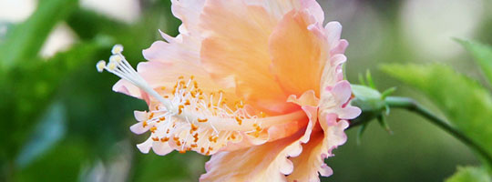
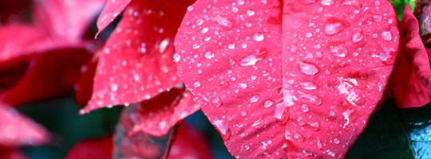
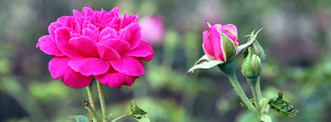
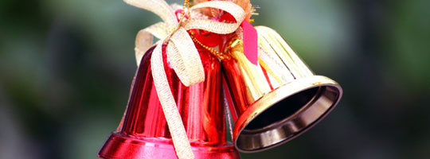

گلایول
نام یک سرده از گیاهان گلدار است. دارای غده مستور از پوشینههای توری یا الیافی و با برگهای پهن که خطی یا شمشیری هستند (gladius در لاتین به معنای «شمشیر» و gladiolus به معنای «شمشیرک» یا «شمشیر کوچک» است).
بنت قنسول
گل بنت قنسول که در ایران به گل کریسمس نیز معروف است، بومی کشور مکزیک است. برگهای قرمز بنت قنسول واقعا زیبا و خیره کننده است و این گل از جمله گیاهان ارزان قیمت و پرطرفدار محسوب میشود. این درختچه زیبا با قرار گرفتن در شرایط ایدهآل، تا ارتفاع ۳ الی ۴٫۵ متر رشد میکند.
داوودی
گیاهان آن چندساله و بومی آسیا و شمالشرقی اروپا اهستند. منشأ بیشتر گونهها شرق آسیا است و مرکز تنوع آن کشور آسیایی است. انواع و ارقام بیشماری دارد که حدود چندین گونهٔ آن تأیید شدهاند. گل داوودی یکی از گیاهان تزیینی بسیار محبوبی است که تقریباً در سراسر دنیا و در رنگهای مختلف یافت میشود.
تاثییرات گل و گیاهان بر افراد
تماشای گل و گیاه و ارتباط با گل 20 دقیقه در هفته سبب تغییر در خلق و خو و بهتر شدن شرایط روانی فرد می شود. مطالعات نشان می دهد که نگاه به گل ها هر روز صبح افسردگی و عصبانیت را به حد قابل توجهی کاهش می دهد.